Name Natruja Suwanprasert
ID 6521600443
Instagram nr_ruja
Name Pavitporn Yamsuwan
ID 6521600541
Instagram meen15753_2773
Name Arisa Natsatan
ID 6521600591
Instagram jane__arisa
มี 11 สายพันธุ์ดอกกุหลาบสวยและหายาก ดังนี้:
1.Juliet Rose
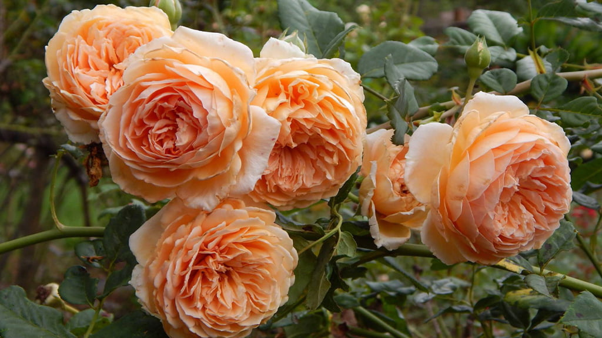ดอกกุหลาบจูเลียต : ดอกกุหลาบที่ใช้ในงานพระราชพิธีต่างๆ ที่อังกฤษ ด้วยความสวยงามของ ดอกทรงถ้วย สีพีชสวยหวาน กลีบดอกเรียงซ้อนกันตามสไตล์กุหลาบโบราณ มีกลิ่นหอมละมุนเบาคล้ายกลิ่นใบชา
2.Rene Goscinny Rose
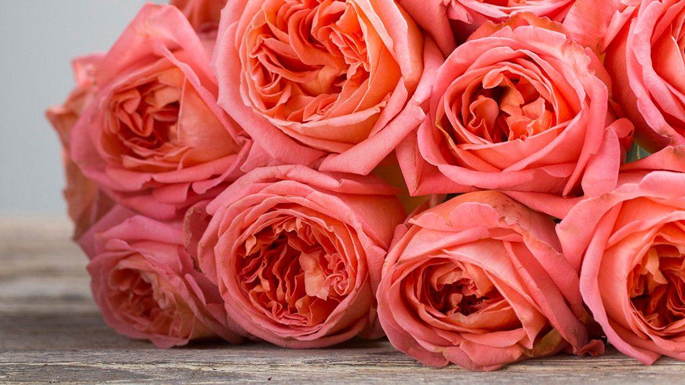ดอกกุหลาบเรน จอสซินนี : เป็นดอกกุหลาบที่มีกลิ่นหอมอ่อนๆ คล้ายกลิ่นของแอพริคอต ประกอบด้วยกลีบดอกประมาณ 80-90 กลีบ ตั้งชื่อตามบรรณาธิการและนักเขียนการ์ตนูชาวฝรั่งเศส
3.Patience Rose
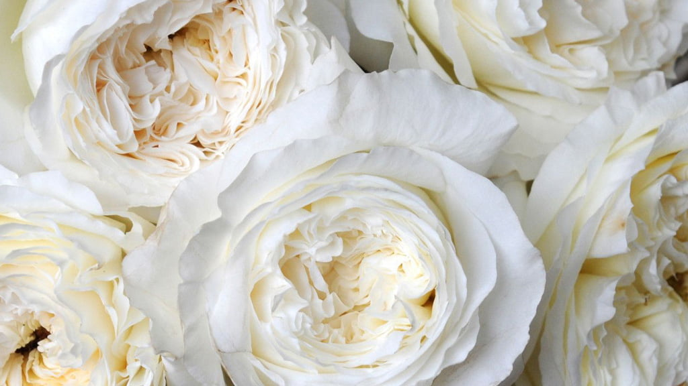ดอกกุหลาบเพเทียนซ์ : ดอกกุหลาบเพเทียนซ์ถูกใช้ในงานพระราชพิธีต่าง ๆ ที่อังกฤษ มีสีครีมอ่อนคล้ายเนย กุหลาบมีรูปทรงครึ่งถ้วย กลีบดอกเรียงซ้อนกันอย่างสวยงามถึง 165 กลีบต่อดอก พร้อมกลิ่นหอมอ่อนๆ คล้ายผลไม้
4.Cream Yves Piaget Rose
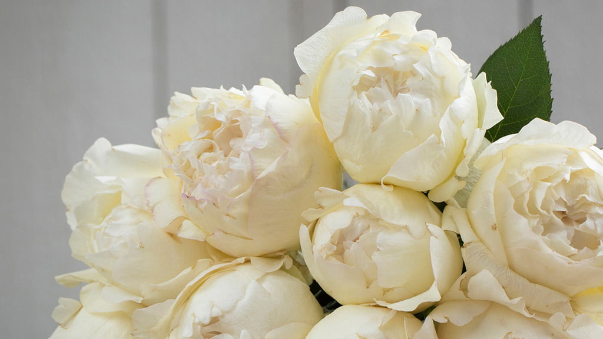ดอกกุหลาบ ครีม อีฟ เพียเจต์ : เป็นกุหลาบที่มีลักษณะพิเศษหาได้ยากมาก คือ มีทรงดอกคล้ายดอกโบตั๋น กลีบเรียงซ้อนกันประมาณ 80 กลีบต่อหนึ่งดอก สีขาวครีม กลิ่นหอมหวานอมเปรี้ยวแบบกลิ่นซิตรัส
5.Beatrice Rose
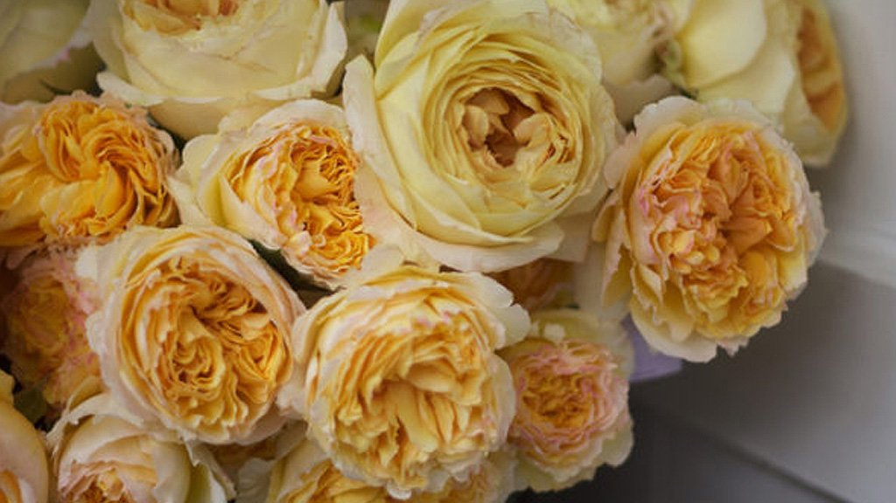ดอกกุหลาบเบียทริซ : กุหลาบสีเหลืองที่มีกลีบดอกเรียงซ้อนกัน 83 กลีบต่อดอก ไล่เฉดสีจากเหลืองสดด้านในออกไปหาเหลืองอ่อนด้านนอก เมื่อเมื่อบานจะมีลักษณะเป็นทรงครึ่งถ้วย มีกลิ่นหอมอ่อนๆ หอมเหมือนยางไม้หอมผสมกับกลิ่นส้มแอปริคอต
6.Toulous Lautrec Rose
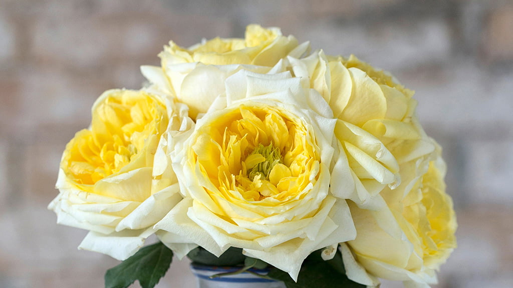ดอกกุหลาบตูลูซ โลแทร็ก : เป็นกุหลาบที่อวลไปด้วยกลิ่นหอมของมะนาว ให้ความสดชื่น อัดแน่นไปด้วยกลีบที่อยู่ในตัวดอกประมาน 60-90 กลีบ ที่มาของชื่อ Toulouse Lautrec มาจาก Henri De Toulouse Lautrec (อ็องรี เดอ ตูลูซ โลแทร็ก) ชื่อของจิตรกรชาวฝรั่งเศษ
7.Miranda Rose
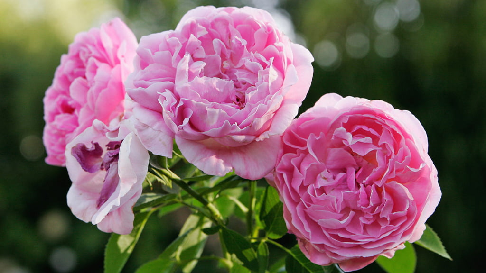ดอกกุหลาบมิรันด้า : ถือเป็นกุหลาบที่ได้รับความนิยมเป็นอย่างมาก เพราะทรงกุหลาบค่อนข้างใหญ่เป็นพิเศษ เมื่อดอกบานเต็มที่จะเผยให้เห็นกลีบด้านในอย่างชัดเจน ในหนึ่งดอกจะมีประมาณ 120 กลีบ ดอกเป็นมีสีชมพูน่ารักมีกลิ่นหอมอ่อนๆ คล้ายกลิ่นผลไม้
8.Constance Rose
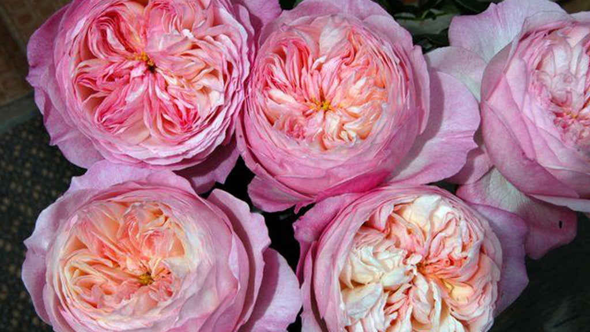ดอกกุหลาบคอนสแตนซ์ : เป็นดอกกุหลาบทรงถ้วยสวยงาม แสนโรแมนติก ประกอบด้วยกลีบมากถึง 140 กลีบต่อหนึ่งดอก มีสีชมพูอ่อนผสมสีชมพูเข้มรอบกลีบดอก ถือเป็นกุหลาบรูปทรงถ้วยที่มีลักษณะรูปทรงสวยทั้งยังมีกลิ่นหอมหวานของผลไม้อีกด้วย
9.Yves Piaget Rose
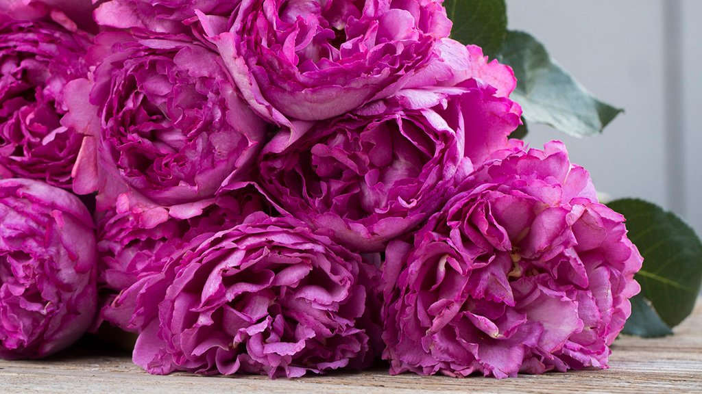ดอกกุหลาบอีฟ เพียเจต์ : กุหลาบชนิดแรกในคอลเลกชั่นของ Meilland Jardin & Parfum Roses เป็นกุหลาบทรงคล้ายดอกโบตั๋นหรือสกู๊ปไอศกรีม มีกลิ่นหอมอันน่ารื่นรมย์ หวานอมเปรี้ยว แบบกลิ่นซิตรัส มีกลีบดอกประมาน 80 กลีบ
10.Princess Charlene De Monaco Rose
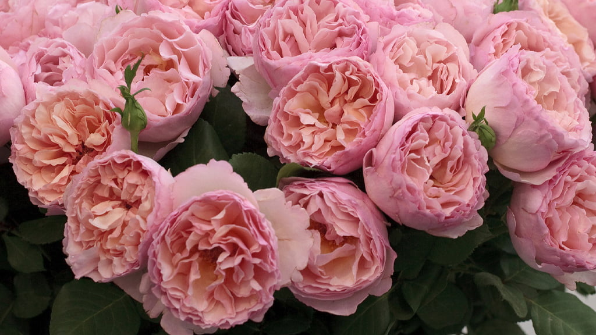ดอกกุหลาบพรินเซส ชาร์ลีน เดอ โมนาโก : ถือเป็นกุหลาบที่มีกลิ่นหอมมากสายพันธุ์หนึ่ง จนได้รับ 3 รางวัลการันตีจากงาน International Perfume Prices และรางวัลเหรียญทอง จากงาน Geneva International Trail Of New Roses
11.Prince Jardinier Rose
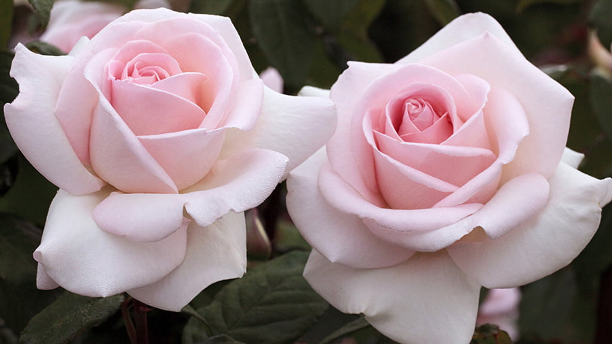ดอกกุหลาบ พรินซ์ จาร์ดีนเออร์ : ดอกกุหลาบสีชมพูอ่อน มีกลิ่นหอมหวานโรแมนติกของพีช ประกอบด้วยกลีบดอกประมาณ 60 กลีบต่อหนึ่งดอก เมื่อบานเต็มที่จะเผยให้เห็นเกสรด้านใน